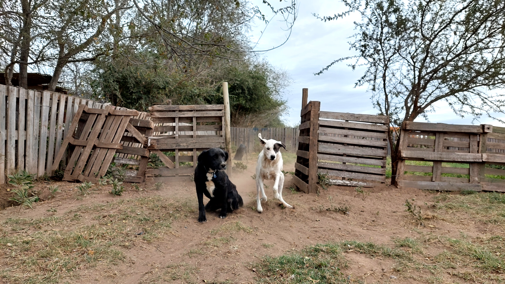
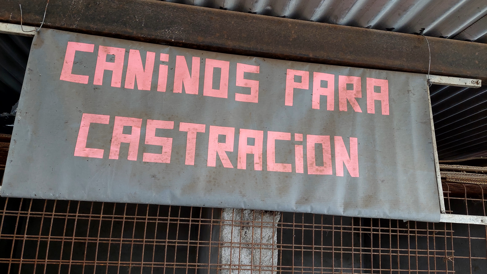

Centro de Reinserción Rio Cuarto
Hay perros que lamentablemente han pasado parte de su vida allí y están en la búsqueda de un hogar. Rocío Ramón es una de las responsables del refugio, y es quien se encarga a cerca de la difusión de su contenido. Genera redes en Instagram con los perros que forman parte del refugio y exhibe las características de ellos. En algunos casos, suele hacer videos reflexivos para tomar consciencia acerca de la vida de los perros en un canil. Con el objetivo de fomentar las adopciones responsables.


